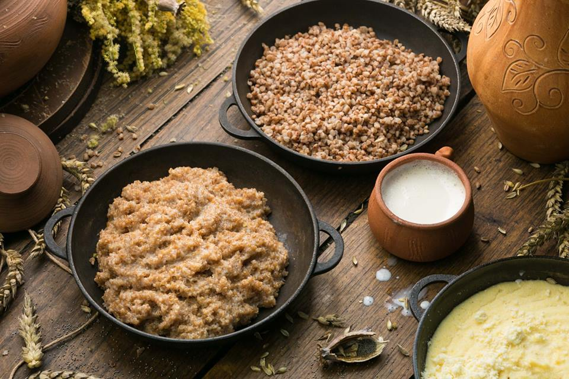

Хліб та зернові. «Архаїчне ядро» української кухні
Протягом багатьох століть хліб, хлібні вироби та страви з зернових становили основу харчування українців. Починаючи від найдавніших прісних коржів, як готували на території Україні тисячі років тому, до безлічі складних хлібобулочних виробів, якими, наприклад, захоплювався Бальзак, подорожуючи Україною.
В середньовічній Україні (і пізніше) хліб переважно випікали з житнього борошна, рідше – з ячменю та вівса. Пшеничний хліб здебільшого готували на великі свята: Різдво, Великдень або на честь весілля.
Взагалі слово «жито» ще в часи Київської Русі мало настільки широке значення, що ним називали будь-яку їжу взагалі.
Зазвичай випікали житній хліб на заквасці, хоча й страв із прісних коржів вистачало. І за часів Київської Русі, і в рецептах 19 століття можна знайти згадки про хлібну закваску на основі хмелю.
До речі, в 12 столітті православна церква для причащання обрала дріжджовий хліб, на відміну від католицької, яка надала перевагу пісним просвирам.
В різних регіонах України до жита додавали різні домішки. Наприклад, в 19 столітті на Слобожанщині, випікаючи житній хліб, додавали гречане борошно, на Західній Україні – вівсяне та кукурудзяне, на Полісся ж додавали картоплю.
- В «Енеїді» Котляревського слово «хліб» згадується 20 разів. Навіть боги, вирушаючи в гості один до одного, беруть з собою хліб та сіль.
- В цій же «Енеїді» згадується понад 50 страв з борошна.
- Бальзак в одному з листів згадував про 77 видів українського хліба.
Назви хлібобулочних виробів (виипічки), поширені в різних регіонах України
Адзимка, бабка, балабан, балабух, баник, барабулінник, барінок, білаш, бокораш, боханец, бохон, бриндзяник, брусики, букатка, буля, бурчіник, буханець, вершок, вертута, вихватень, вабаринок, восух, вубаранець, вургєник, вурдіник, вущіпок, галайдух, гаманове вухо, гарбузячий малай, грисяк, гречаники, грінка, грушаник, гугель, гуска, дараба, дивень, жиляник, женва, житнєк, завиванець, засадьок, засушок, калач, каленик, калита, канапки, канама, капустяник, катлама, качаник, качечка, кваснини, кихлі, клийтуха, книш, книшник, коврачик, колач, колобок, колюче, коровай, кох, креплики, кручінка, кулибка, кукурудзєник, кукуц, кусис, куха, кручінка, ладин, лапшивник, лежень, легкодушник, леміщаники, лустка, маглай, мазурик, макагиги, маківник, макорженик, малайчик, мандзар, мантулка, марципани, мачаник, медяник, мелайник, опріснок, сущик, пайда, палапундик, пампухи, пальошки, паляниця, палянка, пана-баба, папа, паска, пилюшка, пиріг, пирожаччя, пишка, підпалок, підскрубук, пірник, пішкоти, плажатура, плачінда, плечінда, плескач, пляцок, подавник, пончик, попряник, постоли, потапці, пошкребич, праники, примішка, принципал, присипаник, прісняк, проскури, повидняник, пугач, пупиця, пухтелик, рогалик, рулі, свєтість, семидальний хліб, сімняний малай, сковородник, сколотяник, скрутлик, содник, соленики, спасеники, стовпці, страпаки, страсбурзький пиріг, стулники, струнець, струтиль, струцень, стряпак, стульні, сушиця, тенва, туленик, франзоля, хавтур, хлібини, хрещик, цвібах, цушка, цілушка, чорниш, чудуфай, шаломойник, шишки, шкребтаник, штруциль, шулики.
З різного часу знаходимо згадки про різноманітні каші – з проса, ячменю, вівса, пшениці, гороху, сочевиці. Приблизно з XIII — XIV ст. поширюється також гречка. Дуже поширеними були кашоподібні страви з борошна: гречана лемішка, пшенична або житня соломаха, вівсяне толокно, пшоняні малаї. При чому часто вони були ферментованими: вівсяний кисіль, житньо-гречана кваша і все таке інше.